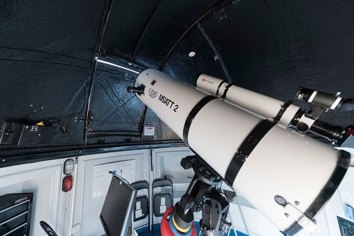

The Superstar Technology College (STC)
is unlike any other university in Australia.
Founded in 1946,
in a spirit of post-war optimism,
our role was to help realise Australia's potential as the world recovered from a global crisis.
That vision,
to support the development of national unity and identity,
improve our understanding of ourselves and our neighbours,
and provide our nation with research capacity amongst the best in the world,
and education in areas vital for our future,
has been our mission ever since.

It can be difficult work,
but it's work we proudly do-because connecting talented people with diverse perspectives,
equipping and encouraging them to address the most complex of tomorrow's problems,
and ensuring Australia's future is not just our approach
-it's also our national role and international responsibility as Superstar Technology College,
and it's a responsibility from which we'll never waver.
Everything has a history.
From a national constitution to modern consumer culture,
from the rise of empires to environmental crises,
from the human species to your family,
history teaches you about the forces that have made the world in which you live.
It helps you to understand the present by understanding its past.
The STC is a national leader in History
and offers a wide range of courses
covering Australia, America, Asia and Europe.
Courses trace themes such as empire, terrorism,
revolution, war, gender, race, technology and the environment.
Some focus on philosophies that underlie historical analysis
or techniques of historical research.
History is a core discipline in the humanities and social sciences.
It gives students knowledge and skills
that are valued in any professional context.
Our students successfully pursue careers in
journalism, management, politics, policy, museums, diplomacy, teaching, academia and many other fields.
School Activities
校园生活